核心结论速览
以下数字均为双模式集合中位数口径，相对 1981–2010 观测基准期（CHELSA）的变化量。
模式间：MPI +3.90 / MRI +4.46
中排放路径下仍持续变暖
强降水占比却下降 10–15 个百分点
（α = 0.05，逐格点检验）
阅读指引
图册组织与命名规则
全部图件由范围 × 变量 × 情景 × 窗口 × 指标类型五个维度组织，命名规则为 变量_情景_窗口_类型.png（全域 1km 版）与 变量_情景_窗口_类型_ws.png（流域 30m 版），例如 tas_ssp585_2081-2100_change_ws.png 表示"气温 · SSP585 · 2081–2100 窗口 · 流域 30m 空间变化图"。上方工具栏可按五个维度筛选浏览；点击任意图可放大查看，支持左右键翻页。流域版不含时间序列图（ts），但新增现状—未来绝对场对比图（mean）。
六类图的定义
- 绝对场对比（mean，仅流域版）：现状 1981–2010 与未来窗口的绝对值双联图（气温 °C / 降水 mm·年⁻¹），共享色标，山体阴影提供地形语境。
- 空间变化（change）：格点级变化量填色图（气温 K / 降水 %），取集合中位数。
- 时间序列（ts，仅全域版）：区域平均月值曲线，黑线为集合中位数，灰色阴影为模式间 min–max 范围。
- MK 趋势（trend）：窗口内 Sen 斜率填色，灰色区域标注 p ≥ 0.05 的不显著格点（流域版）/ 黑点标注显著格点（全域版）。
- 极端暖/冷月（txx / tnn）：最暖月 / 最冷月相对基准期同期距平（K）。
- 强降水占比（r95p）：超过基准期同月 95 分位的降水占年总量比例的变化（百分点）。
统计口径说明
- 所有"变化"均相对 1981–2010 基准期（CHELSA 观测口径）计算。
- 空间图的数值取双模式集合中位数；不确定性请结合时间序列图的模式间范围阅读。
- 极端指标为 ETCCDI 标准指数在月值数据上的近似实现（TXx/TNn/R95p 口径），报告引用时建议标注。
- R95p 读图警示：未来期降尺度数据的年际变差显著小于历史观测（如 1 月年际标准差约 3 mm 对历史 27 mm），未来几乎没有月份超过基准期同月 95 分位，因此各窗口 R95p 变化普遍呈 −10 ~ −15 个百分点的均匀负值。这是数据口径限制而非真实的强降水减少，引用时应注明，不宜据此得出"强降水结构转变"的物理解释。
流域边界标识
全部空间图均叠加黑色边界线 = 云龙天池流域范围，白色五角星 = 天池湖心。流域由 30m Copernicus DEM 经 D8 汇流分析自动划定：面积 6.98 km²（8111 个 30m 格点，格点面积已按纬度做经度收缩校正），高程 2557–3223 m；湖盆以地形洼地自动识别，其填充体积 9.69 Mm³、面积 1.32 km²、湖面高程 2565 m，与文献值（1089.7 万 m³ / 1.28 km² / 2558 m）相符。划定方法详见下方检查图。
流域 30m 地形细化是怎么做的
1km LSTM 降尺度结果在流域内仅覆盖约 7 个格点，不足以刻画 6.98 km² 的小流域。因此将气候场细化到 GLO-30 原生 30m 网格（流域外扩约 1.3 km，约 4.4 万格点）：气温采用局部高程递减率法——在 1km 网格上逐月回归气温—高程关系得递减率 γ（约 −0.4 ~ −0.6 K/100m），按 30m 与 1km DEM 的高程差 Δz 修正（T₃₀ = T₁ₖ + γΔz）；降水采用双线性插值。信息增量体现在绝对场（mean 图）紧贴山脊—山谷的地形结构上；ΔT/ΔP 等变化场中 γΔz 项在历史/未来间相互抵消，空间形态与 1km 版一致，数值口径无差别。
结果是怎么算出来的
ESGF 原生 CMIP6 月值数据（约 1° 分辨率）→ 重网格到研究区 → EQM 非参数经验分位映射偏差校正（以 CHELSA 1981–2010 逐格点逐月分布为参考）→ 输入 3×3 邻域粗场 + 地形因子（DEM、坡度、坡向）+ 月相的 LSTM 降尺度模型，拟合目标为 CHELSA 1km 场 → 对 SSP 情景预测并施加趋势保持信号恢复（确保升温/降水信号与 GCM 一致、不被回归均值衰减）→ 双模式集成。

云龙天池流域划定检查图（30m DEM · D8 汇流分析）
灰度山体阴影底图上，红色边界为自动划定的云龙天池流域（6.98 km²），蓝色为天池湖面，▲ 为流域出口（湖水外泄方向），★ 为湖心。流域范围即图册所有空间图中黑色边界线所标示的区域，也是全部「流域 30m」图件的统计范围。
结果图册（72 图）
气温 · SSP245 · 2041–2060（中期） · 流域 30m

流域年均温：现状 vs SSP245 · 2041–2060（°C）
30m 地形细化后流域年均温呈清晰的山脊冷、河谷暖结构，等值线紧贴地形起伏——这是 1km 网格（流域内仅约 7 个格点）无法呈现的细节。左图为现状（1981–2010），右图为未来窗口，共享色标：升温使整体色阶向暖端平移约 1.4 K。

流域年均温变化 ΔT（K）· SSP245 · 2041–2060
流域平均 +1.43 K，略高于全域口径（+1.36 K，图 37）——流域平均海拔较高，升温幅度随海拔略增。变化场内空间差异不足 0.1 K，说明该窗口升温的地形调制弱，主要受大尺度强迫控制。

流域 MK 趋势检验（Sen 斜率）· SSP245 · 2041–2060
流域内 95.6% 格点通过显著性检验（灰色为不显著区），平均 Sen 斜率 +0.02 K/年。与全域版（图 39，98.9%）基本一致：升温趋势在流域尺度同样统计稳健。

流域极端暖月距平 TXx（K）· SSP245 · 2041–2060
流域平均 +0.90 K（每年最暖月的年际平均气候态相对基准期同期）。极端暖月抬升幅度低于年均温变化（+1.43 K），即升温部分地由冷季贡献——对湖泊热状况而言夏季热压力的增幅相对温和。

流域极端冷月距平 TNn（K）· SSP245 · 2041–2060
流域平均 +1.62 K，明显大于同期 TXx（+0.90 K）——冷月抬升约为暖月的 1.8 倍，变暖信号集中在冬季。天池冬季冰情与春季混合启动将先于夏季热压力发生变化。
气温 · SSP245 · 2081–2100（末期） · 流域 30m

流域年均温：现状 vs SSP245 · 2081–2100（°C）
末期流域年均温升至 13.3 °C（现状 11.1 °C）。与图 01 相比色阶整体再向暖端平移约 0.8 K，而山脊—河谷的空间温差结构保持不变——升温平移而非压缩垂直温度梯度。

流域年均温变化 ΔT（K）· SSP245 · 2081–2100
流域平均 +2.22 K，约为中期（图 02）的 1.55 倍。与图 17（流域版 SSP585 末期 +4.32 K）对比，两种排放路径的末期升温相差约 2.1 K，即减排对流域的量化收益。

流域 MK 趋势检验（Sen 斜率）· SSP245 · 2081–2100
0% 格点显著——SSP245 路径在 2080 年后温度趋稳，窗口内以自然变率为主（全域版图 44 同样为 0%）。读图时应区分"窗口内趋势不显著"与"相对基准期已显著增暖 +2.22 K"两个层面。

流域极端暖月距平 TXx（K）· SSP245 · 2081–2100
流域平均 +1.75 K，约为中期（图 04 的 +0.90 K）的两倍。极端暖月压力随窗口推进持续累积，无明显空间避风港。

流域极端冷月距平 TNn（K）· SSP245 · 2081–2100
流域平均 +2.09 K。冷月抬升持续大于暖月（1.75 K），冬季变暖主导的格局在中排放路径下一以贯之，湖泊冰封概率持续下降。
气温 · SSP585 · 2041–2060（中期） · 流域 30m

流域年均温：现状 vs SSP585 · 2041–2060（°C）
高排放路径中期流域年均温 13.1 °C，已超过 SSP245 末期水平（图 06 的 13.3 °C 附近），即高排放中期 ≈ 中排放末期——排放路径的时间错位是解读两情景差异的关键。

流域年均温变化 ΔT（K）· SSP585 · 2041–2060
流域平均 +1.98 K，与同期 SSP245（+1.43 K）相差约 0.5 K——与全域口径（图 47 vs 图 37）的分岔时序一致：中叶两路径尚未明显分离，差距在下半叶拉开。

流域 MK 趋势检验（Sen 斜率）· SSP585 · 2041–2060
100% 格点显著，平均 Sen 斜率 +0.034 K/年。高排放下升温信号强到在流域任意 20 年窗口内都可被逐格点统计检验捕捉，与图 08（SSP245 末期的 0%）形成路径间对照。

流域极端暖月距平 TXx（K）· SSP585 · 2041–2060
流域平均 +1.35 K。高排放中期夏季热压力已与 SSP245 末期（图 09 的 +1.75 K）接近，提前约半个世纪达到同量级——适应措施的时窗在压缩。

流域极端冷月距平 TNn（K）· SSP585 · 2041–2060
流域平均 +2.03 K。冷尾与暖尾同步右移且冷端幅度更大（约为暖端 1.5 倍），变暖呈"分布整体平移 + 冷端先行"形态，对应大尺度辐射强迫而非环流极端化。
气温 · SSP585 · 2081–2100（末期） · 流域 30m

流域年均温：现状 vs SSP585 · 2081–2100（°C）
流域版主结果图。末期流域年均温达 15.4 °C——比现状高 4.3 K，与现状低海拔河谷的气候相当，即整个流域"海拔下移"了数百米的高程带。山体阴影与色场的叠置清晰显示升温后谷地暖区的扩张。

流域年均温变化 ΔT（K）· SSP585 · 2081–2100
流域平均 +4.32 K（全域 +4.18 K，图 52）。流域内变化幅度约 4.2–4.5 K，山脊略高于河谷——升温的垂直分异在本窗口开始显现，对湖泊补给与高海拔生态是叠加压力。

流域 MK 趋势检验（Sen 斜率）· SSP585 · 2081–2100
100% 格点显著，平均 Sen 斜率 +0.037 K/年（全域版图 54 同为 100%）。高排放路径下升温在末期窗口内仍保持强趋势，尚无"趋稳"迹象。

流域极端暖月距平 TXx（K）· SSP585 · 2081–2100
流域平均 +3.51 K。最暖月均值抬升 3.5 K 以上，接近现状最暖月与平均夏季之间的差距量级——极端暖月的"新常态"相当于把当前最热月份整体再现为一个频发事件。

流域极端冷月距平 TNn（K）· SSP585 · 2081–2100
流域平均 +4.38 K，为全部指标中的最大变化。冷月抬升 4 K 以上意味着冬季热状态的彻底重构：冰封期大幅缩短、融雪型补给时序提前、春季湖水混合启动时间改变——这些是流域水文与生态最先响应的信号。
降水 · SSP245 · 2041–2060（中期） · 流域 30m

流域年降水：现状 vs SSP245 · 2041–2060（mm/年）
降水绝对场呈迎风坡—背风坡梯度，年总量约 1250–1450 mm。降水为双线性插值（无地形增量），绝对场的空间平滑属方法口径；与气温图（图 01）对照可见两类变量地形结构的来源差异。

流域降水变化率 ΔP（%）· SSP245 · 2041–2060
流域平均 +1.87%（全域 +1.5%，图 57）。弱信号期格点级正负交错，读图以流域整体为准——中期降水变化在统计上尚不成立（见趋势图 23）。

流域 MK 趋势检验（Sen 斜率）· SSP245 · 2041–2060
0% 格点显著（全域版图 59 为 15.8%）。降水信号弱、年际噪声大，中期趋势不可检测；与气温同窗口的 95.6%（图 03）对照，凸显两类变量信号—噪声比的量级差异。

流域强降水占比变化 R95p（百分点）· SSP245 · 2041–2060
全域一致的 −14.2 个百分点。请注意：这是数据口径限制造成的均匀负值（未来期年际变差坍缩，几乎无月份超过基准期同月 95 分位），不是真实的强降水减少信号，详见阅读指引的统计口径说明。
降水 · SSP245 · 2081–2100（末期） · 流域 30m

流域年降水：现状 vs SSP245 · 2081–2100（mm/年）
末期流域年降水增至 1376.7 mm（+45.2 mm）。双联图共享色标下两期差异细微，属温和增加；降水变化的空间形态平滑源于 1km 变化场的双线性插值口径。

流域降水变化率 ΔP（%）· SSP245 · 2081–2100
流域平均 +3.39%（全域 +2.6%，图 61），较中期（+1.87%）继续偏湿。SSP245 下降水"温和增加"的判断在流域口径下成立，与西南季风区增暖背景下的水汽增加预期一致。

流域 MK 趋势检验（Sen 斜率）· SSP245 · 2081–2100
100% 格点显著，平均 Sen 斜率 +5.7 mm/年——从中期 0% 跃升至全域显著，湿润信号随窗口累积越过噪声门槛。降水趋势的可检测时间尺度长于气温，这与气候学的一般认识相符。

流域强降水占比变化 R95p（百分点）· SSP245 · 2081–2100
与图 24 相同的均匀 −14.2 pp 口径限制信号。总量增加（+3.4%）而"强降水占比"表观下降的矛盾组合，正是提醒读者 R95p 图在本数据口径下不可作物理解读的最好例证。
降水 · SSP585 · 2041–2060（中期） · 流域 30m

流域年降水：现状 vs SSP585 · 2041–2060（mm/年）
高排放中期流域年降水 1311.5 mm（−20 mm），轻度变干。与气温的持续增暖（图 11）叠加意味着"暖干"组合——该组合下蒸散发需求上升而供给收缩，是湖泊水量平衡最不利的情形。

流域降水变化率 ΔP（%）· SSP585 · 2041–2060
流域平均 −1.5%（全域 −2.1%，图 65），与同期 SSP245（+1.87%）方向相反——两情景的中期降水分岔早于气温分岔出现，情景敏感性在降水上更强。

流域 MK 趋势检验（Sen 斜率）· SSP585 · 2041–2060
100% 格点显著，平均 Sen 斜率 −5.2 mm/年（全域版图 67 为 92.2%）。中期"轻度变干"虽幅度小，但方向在流域内高度一致，统计上成立。

流域强降水占比变化 R95p（百分点）· SSP585 · 2041–2060
均匀 −14.2 pp，同图 24 的口径限制说明。变干窗口（总量 −1.5%）叠加表观的强降水占比下降，真实信息只有总量方向一项。
降水 · SSP585 · 2081–2100（末期） · 流域 30m

流域年降水：现状 vs SSP585 · 2081–2100（mm/年）
末期流域年降水 1411.4 mm（+79.9 mm），比中期（图 29 的 1311.5 mm）由干转湿、大幅回摆——该转折由两模式的方向分歧驱动（MPI 偏干、MRI 偏湿，见全域版图 69 的模式间差异说明），不确定性大。

流域降水变化率 ΔP（%）· SSP585 · 2081–2100
流域平均 +6.0%（全域 +5.7%，图 69）。此为集合中位数口径——MPI 单模式为 −6.1%、MRI 为偏湿，两模式符号相反，是最直接的多模式必要性证据；决策引用必须附带模式间区间而非仅中位数。

流域 MK 趋势检验（Sen 斜率）· SSP585 · 2081–2100
83.5% 格点显著。低于气温同窗口的 100%（图 18）——不显著区对应两模式信号方向相反、相互抵消的格点；趋势可检测性的空间分异本身就是模式分歧的地图化呈现。

流域强降水占比变化 R95p（百分点）· SSP585 · 2081–2100
均匀 −14.2 pp，同图 24 的口径限制说明。流域版降水极端指标的可靠结论应表述为："在月值降尺度数据口径下，强降水占比变化不可信，需未来引入日值数据重估"——这已列入项目改进计划。
气温 · SSP245 · 2041–2060（中期） · 全域 1km
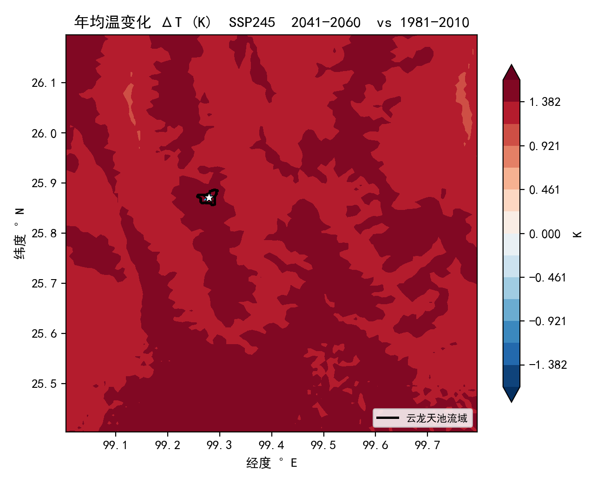
年均温变化 ΔT（K）· SSP245 · 2041–2060
中排放路径下中期全域一致增温，区域平均 +1.36 K。格点间升温幅度存在空间差异，等值线走向受地形调制——这正是 1km 降尺度相对粗网格插值的信息增量。可与图 42（同期情景的末期）对比阅读排放路径的时间演化。
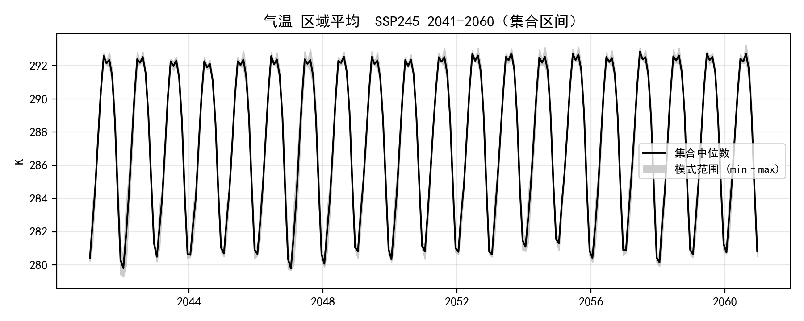
气温区域平均 · SSP245 · 2041–2060（集合区间）
20 年月值序列：黑线为 MPI 与 MRI 双模式集合中位数，灰色阴影为模式间 min–max 范围。季节振幅约 11–12 K（雨热同季的高原季风气候特征）；冬季的模式间分歧明显大于夏季，提示两模式对冬季气温的模拟差异是集合不确定性的主要来源。
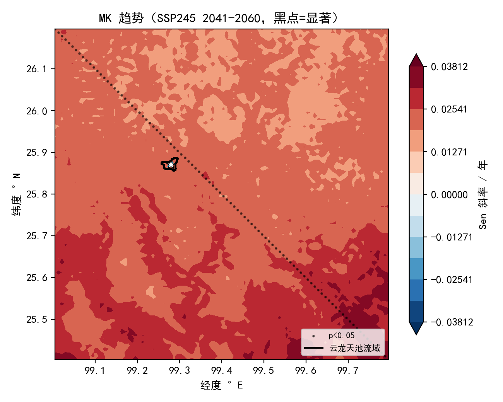
MK 趋势检验（Sen 斜率）· SSP245 · 2041–2060
填色为 Sen 斜率（K/年），黑点标注 p < 0.05 的显著格点。中期窗口 98.9% 格点通过显著性检验且斜率一致为正——升温趋势在统计上稳健，不是年际波动的假象。
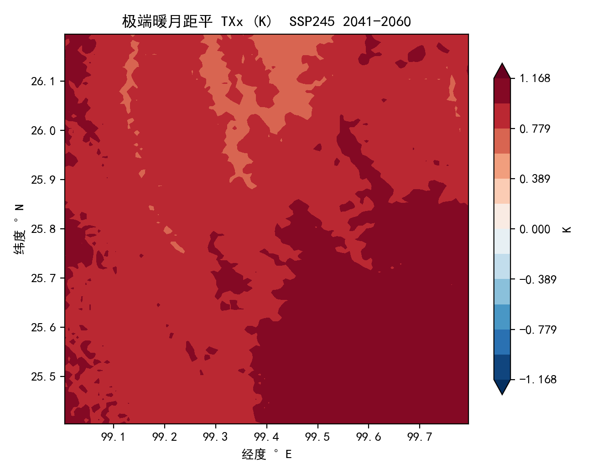
极端暖月距平 TXx（K）· SSP245 · 2041–2060
窗口内最暖月相对基准期同期距平（ETCCDI TXx 的月值近似）。极端暖月与平均态同步抬升，中期距平幅度明显低于末期窗口（对比图 55 可见梯度），说明极端高温风险随排放路径推进而累积。
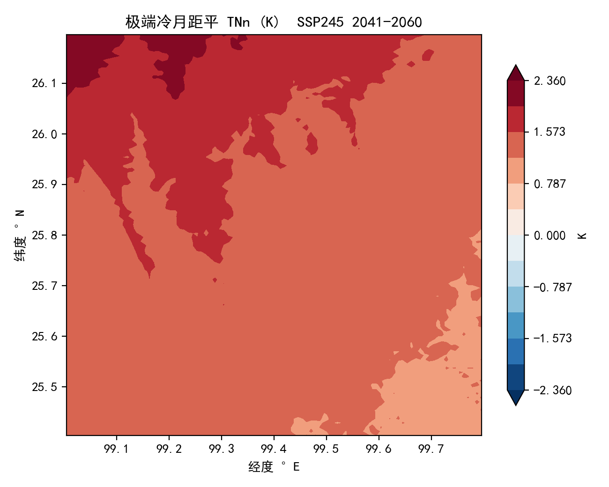
极端冷月距平 TNn（K）· SSP245 · 2041–2060
最冷月相对基准期同期距平。冷月抬升与暖月同步发生，对天池这类高原湖泊的冬季水温、混合翻转过程与流域物候是关键信号；与图 40 成对呈现可展示"分布整体平移"的变暖特征。
气温 · SSP245 · 2081–2100（末期） · 全域 1km
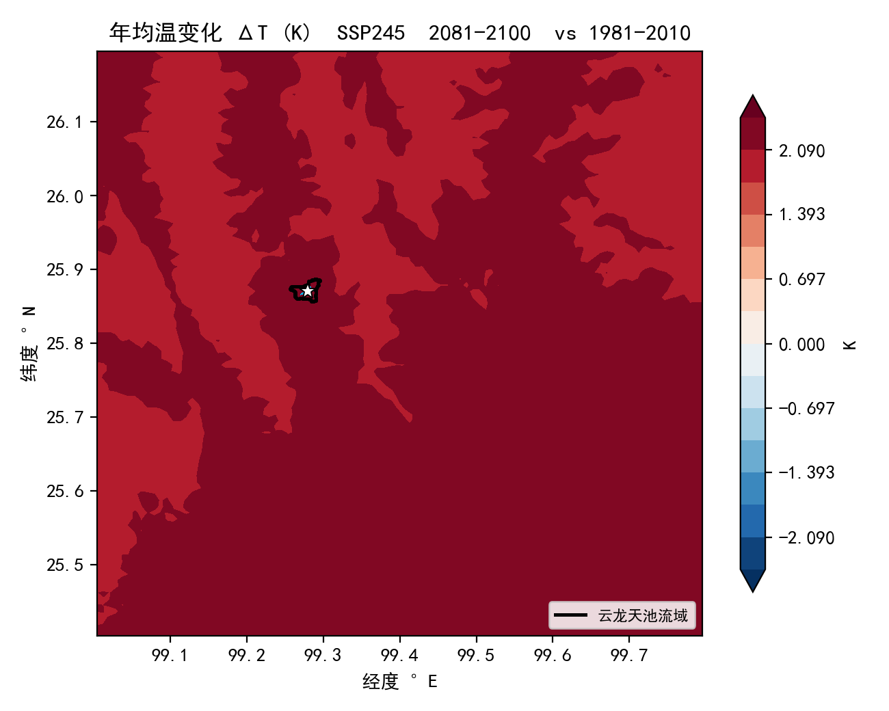
年均温变化 ΔT（K）· SSP245 · 2081–2100
末期区域平均 +2.14 K，约为中期（+1.36 K）的 1.6 倍——SSP245 路径下变暖并未停滞。与图 52（SSP585 末期 +4.18 K）对比即"减排价值"的量化呈现：两种路径末期相差约 2 K。
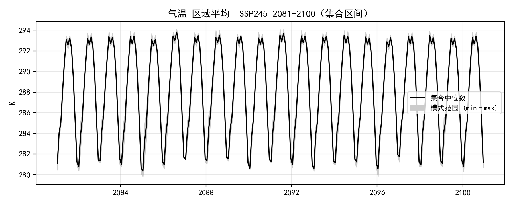
气温区域平均 · SSP245 · 2081–2100（集合区间）
末期年际波动平稳，集合阴影带宽与中期相当，模式不确定性未随时间发散。序列整体水平相对基准期系统性上移约 2 K，季节形态保持稳定。
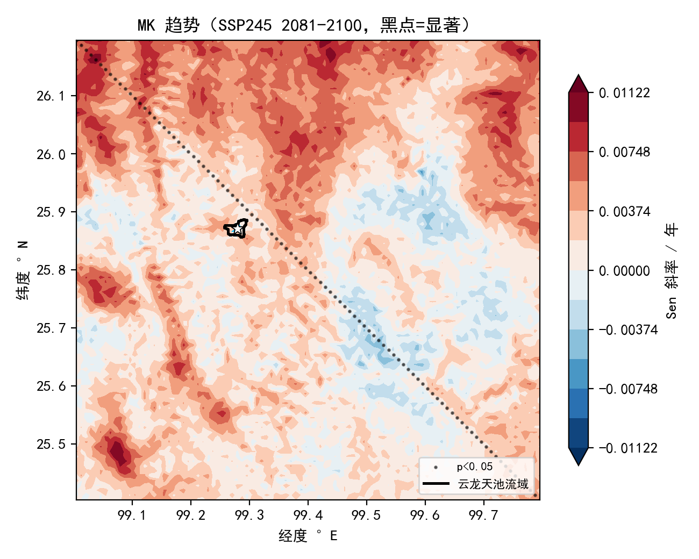
MK 趋势检验（Sen 斜率）· SSP245 · 2081–2100
窗口内 0% 格点显著——这不是模型失效：SSP245 排放路径在 2080 年后温度趋稳，20 年窗口内以自然变率为主（年度序列已经独立核实确为平坦）。读图时应区分"窗口内趋势不显著"与"相对基准期已显著增暖 +2.14 K"两个层面。
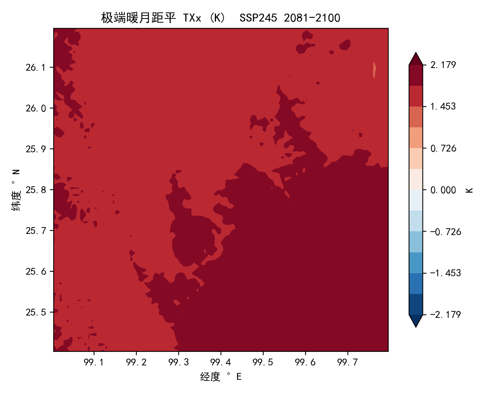
极端暖月距平 TXx（K）· SSP245 · 2081–2100
最暖月距平随窗口推进继续抬升，幅度高于中期（图 40）。全域距平为正且空间分布相对均一，说明极端高温压力在整个流域同步加重，无明显"避风港"格点。
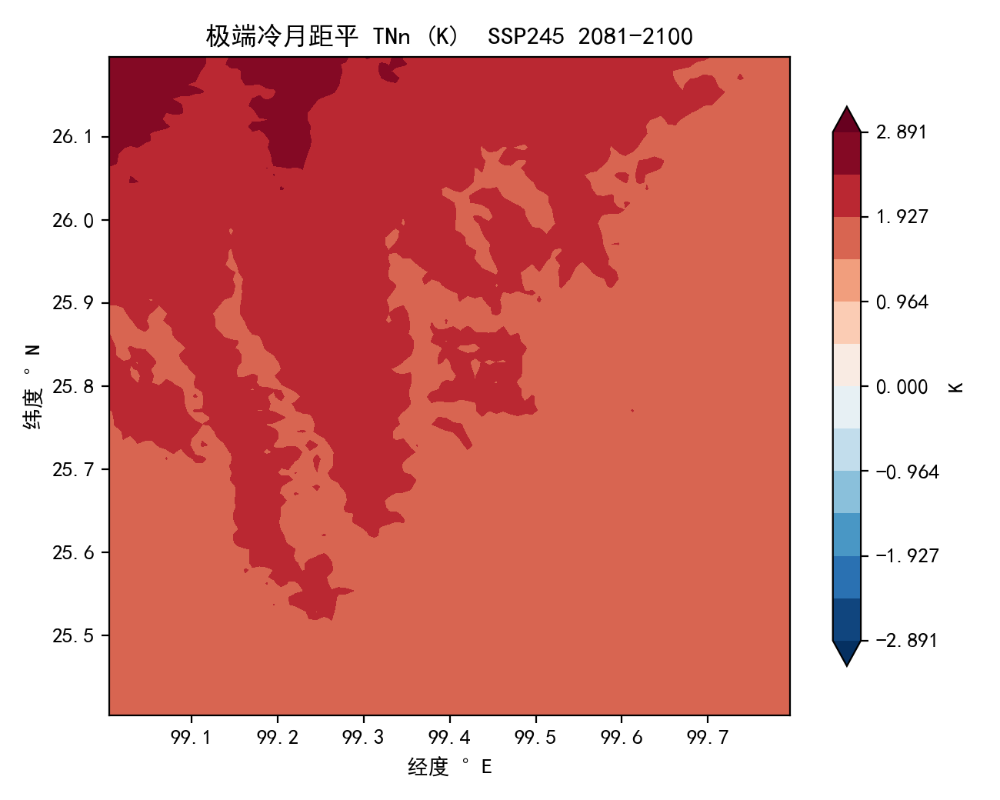
极端冷月距平 TNn（K）· SSP245 · 2081–2100
最冷月距平为正：变暖不仅表现为夏天更热，也表现为冬天更暖。冷月抬升会削减湖泊冬季冰封概率、改变春季混合启动时间，对天池水温结构与水生态是比平均升温更直接的压力因子。
气温 · SSP585 · 2041–2060（中期） · 全域 1km
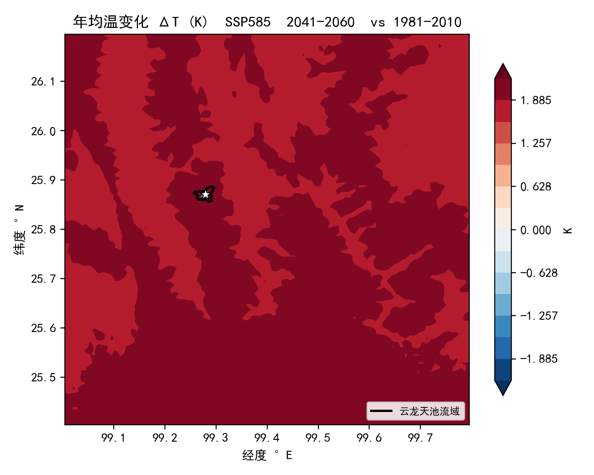
年均温变化 ΔT（K）· SSP585 · 2041–2060
高排放路径中期区域平均 +1.89 K，与同期 SSP245（+1.36 K）相差约 0.5 K——两种路径在 21 世纪中叶尚未明显分岔，减排效益主要在下半世纪显现（对比图 52）。
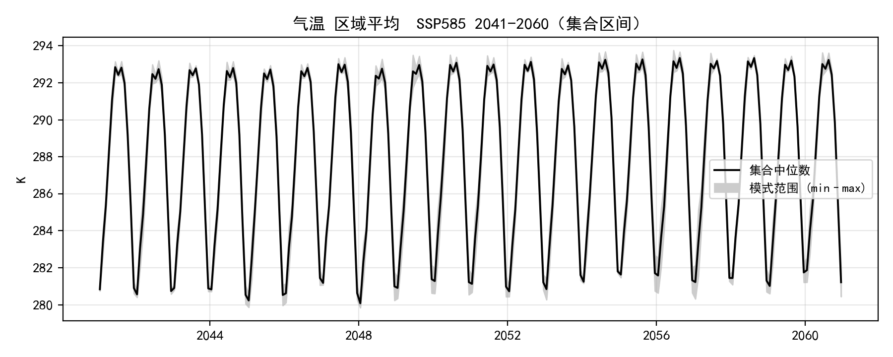
气温区域平均 · SSP585 · 2041–2060（集合区间）
季节循环形态与 SSP245 一致，但序列水平整体更高。模式间阴影带提供了逐月的不确定性边界——注意阴影在冷季更宽，暖季两模式几乎重合，集合结果在夏季可信度更高。
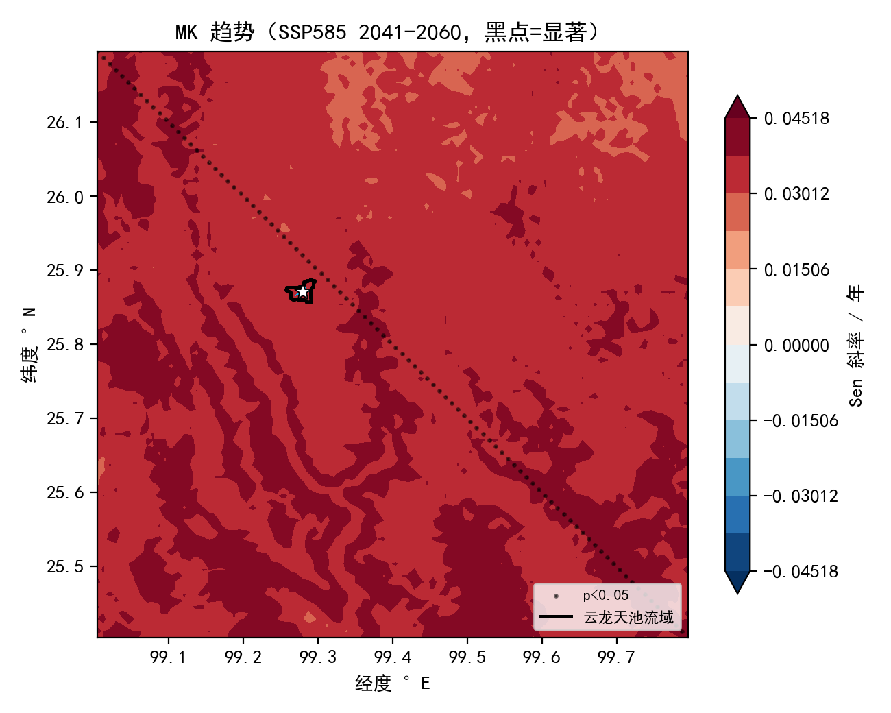
MK 趋势检验（Sen 斜率）· SSP585 · 2041–2060
100% 格点显著增温。高排放路径下升温信号强到在任意 20 年窗口内都能被逐格点统计检验捕捉——信号强度远超自然噪声。
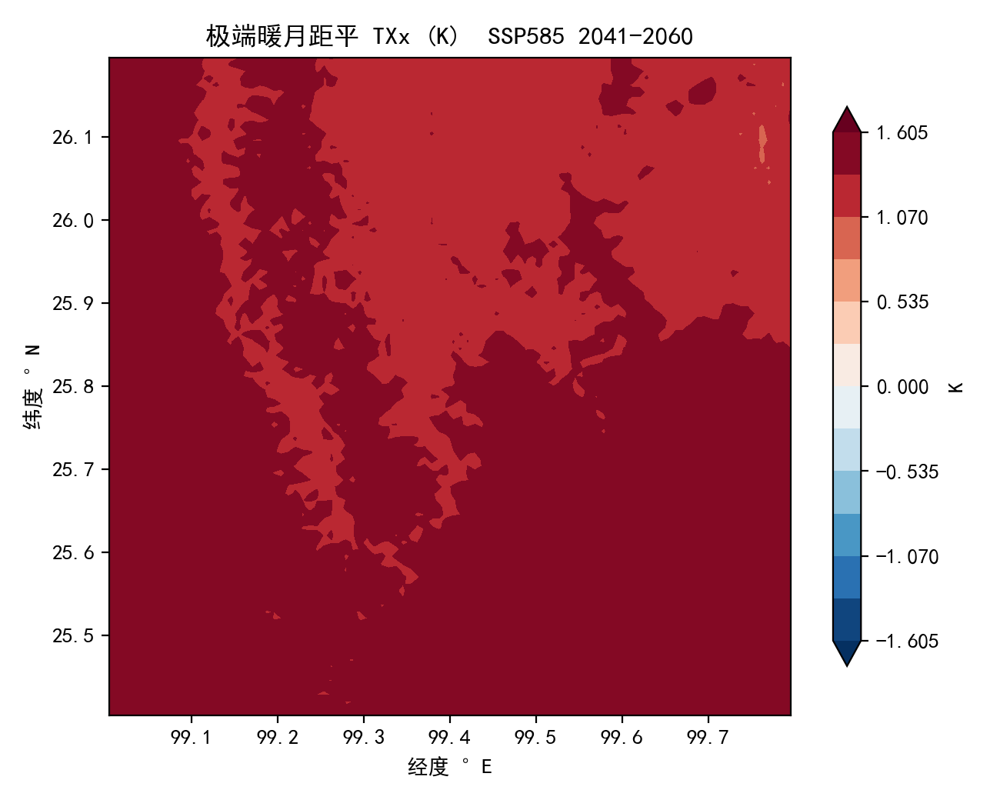
极端暖月距平 TXx（K）· SSP585 · 2041–2060
极端暖月距平为正且高于 SSP245 同期（图 40），分布均匀。中期已是 +1.5 K 量级的极端高温抬升，对流域内农业生产（如核桃、水稻的夏季热害）构成早期风险信号。
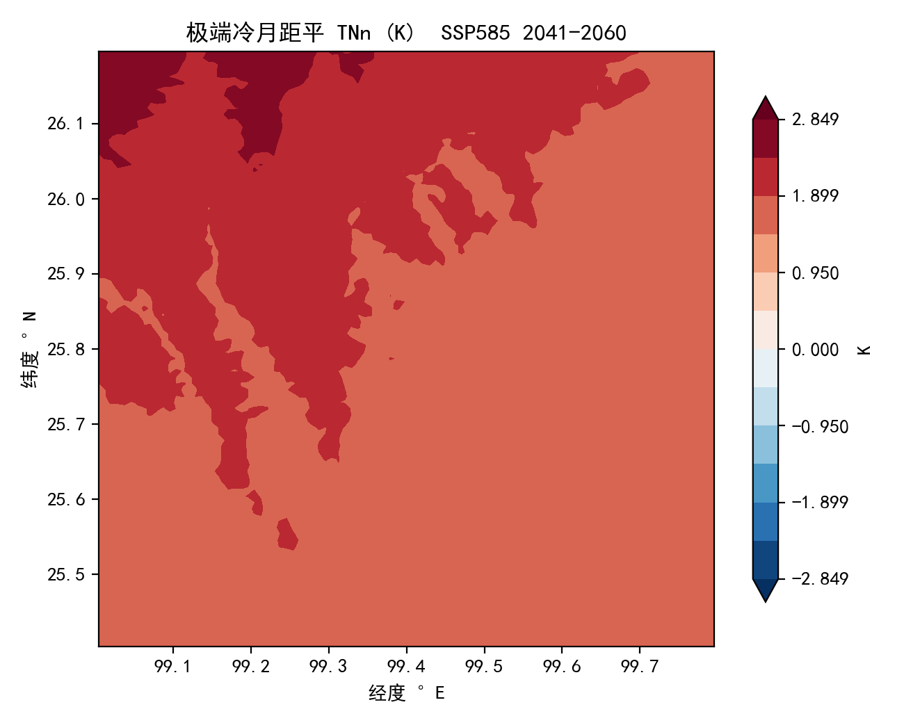
极端冷月距平 TNn（K）· SSP585 · 2041–2060
最冷月距平与同期 TXx 抬升幅度相当，冷尾与暖尾同步右移——变暖是"分布整体平移"而非"仅暖端拉伸"，这一特征在气候归因上对应大尺度辐射强迫而非环流极端化。
气温 · SSP585 · 2081–2100（末期） · 全域 1km
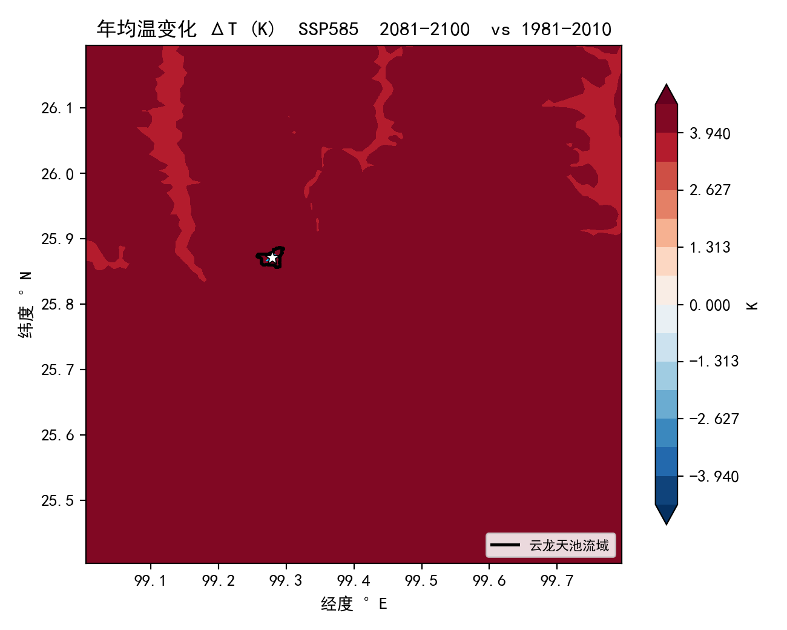
年均温变化 ΔT（K）· SSP585 · 2081–2100
图册主结果图。集合中位 +4.18 K（模式间：MPI +3.90 / MRI +4.46，离散约 0.8 K）。全域升温 4 K 以上；河谷廊道升温略低、山脊更强，地形对升温的调制清晰可辨——这是 1km 降尺度相对粗网格信息增量的直接证据。
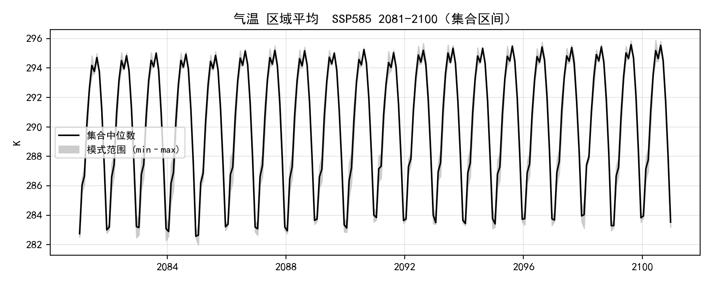
气温区域平均 · SSP585 · 2081–2100（集合区间）
末期序列相对基准期系统性上移约 4 K，夏季峰值接近 295 K（约 22°C）。冬季模式间离散明显大于夏季——冬季升温的集合不确定性最大，做影响评估（如冰情、物候）时应同时引用区间而非仅中位数。
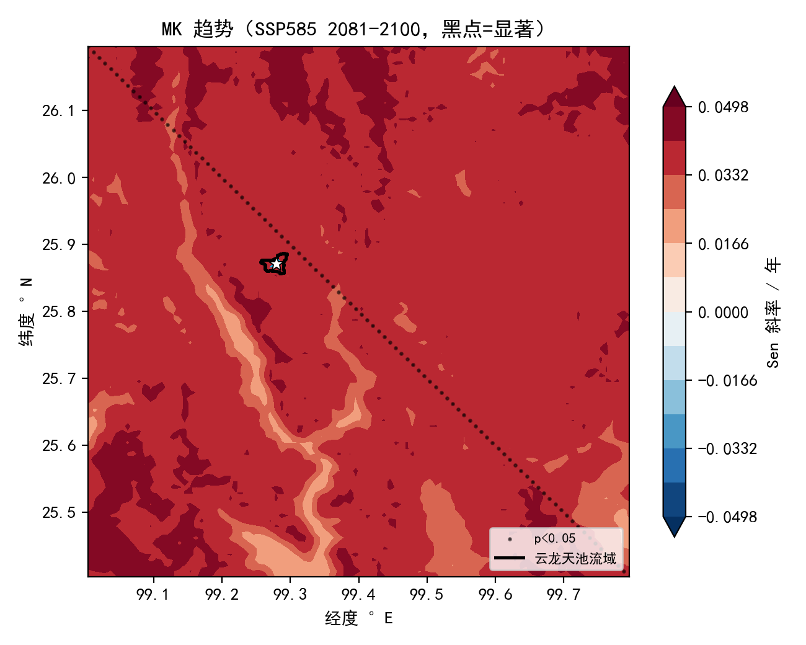
MK 趋势检验（Sen 斜率）· SSP585 · 2081–2100
100% 格点显著，Sen 斜率全域为正。即便在温度趋稳假设不成立的 SSP585 下，窗口内趋势检验依然全部通过，与图 44（SSP245 末期 0%）形成鲜明对照——两类情景的趋势可检测性差异本身就是有统计意义的结论。
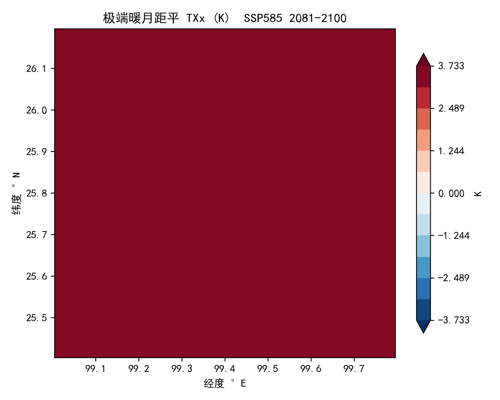
极端暖月距平 TXx（K）· SSP585 · 2081–2100
全域距平 +3.5 K 左右，且空间分布高度均一——极端高温与平均升温同步抬升，不存在"平均变暖但极端不变"的缓冲。叠加高原湖泊生态对温度的敏感性，这是对天池水生态压力最大的单项信号（流域版口径 +3.51 K，图 19）。
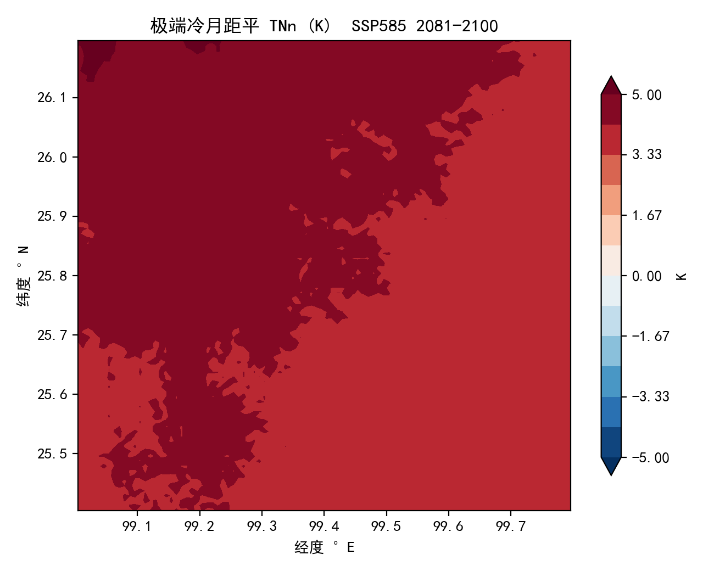
极端冷月距平 TNn（K）· SSP585 · 2081–2100
最冷月抬升幅度与 TXx 同量级。冷月基数低、抬升同样的绝对量意味着相对变化更大：冬季热状况的改变（冰封期缩短、融雪提前）将先于夏季热害显现，是流域水文与生态响应的领先指标。
降水 · SSP245 · 2041–2060（中期） · 全域 1km
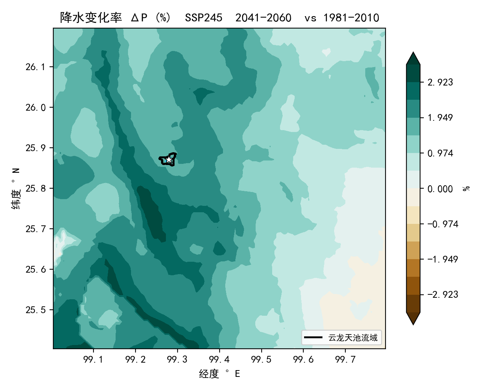
降水变化率 ΔP（%）· SSP245 · 2041–2060
中期降水轻度增加，区域平均 +1.5%。绿色（增湿）与棕色（变干）格点在空间上交错，说明弱信号期格点级方向不一致——降水的空间变率远大于气温，读图时应以区域整体而非单格点结论为准。
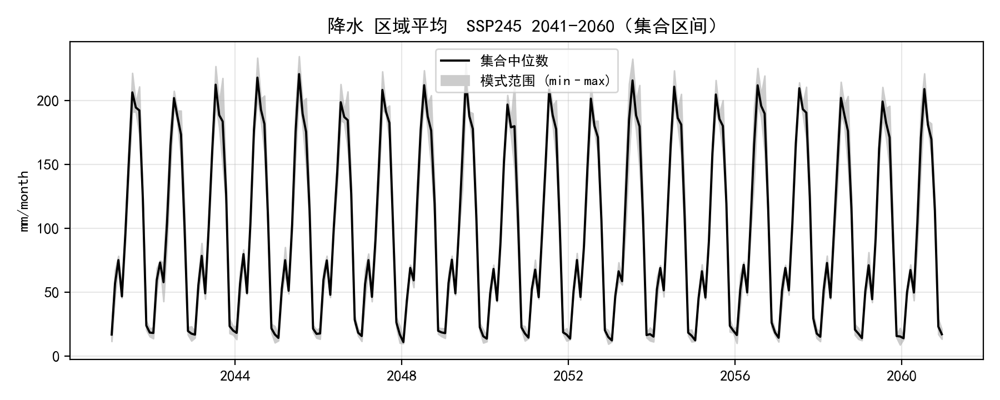
降水区域平均 · SSP245 · 2041–2060（集合区间）
干湿季对比强烈：雨季（5–10 月）降水远高于干季，符合西南季风区特征。模式间分歧集中在雨季——两模式对季风降水的模拟差异是降水集合不确定性的主体，干季则几乎一致。
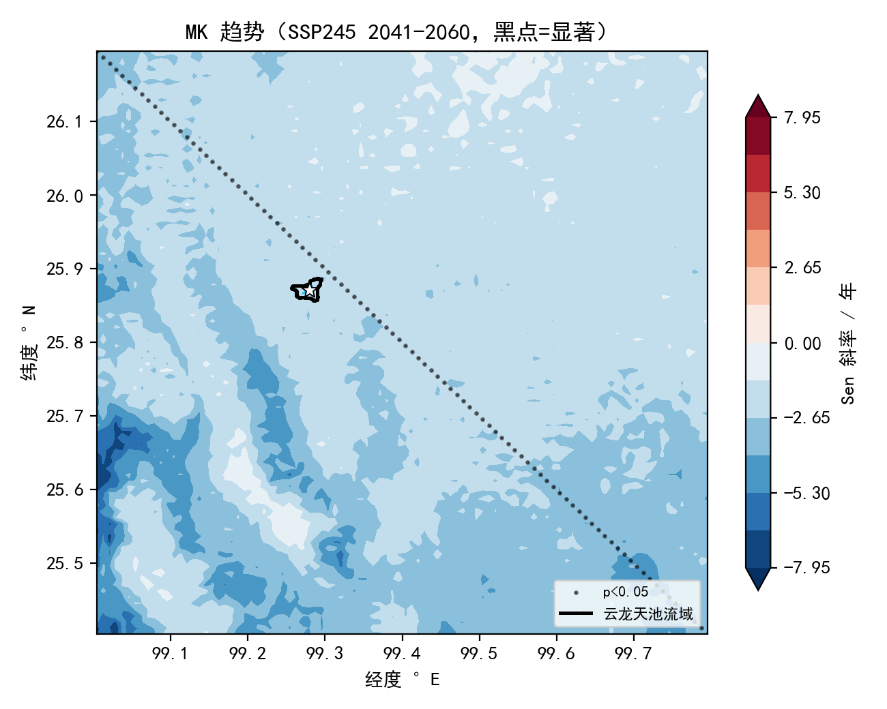
MK 趋势检验（Sen 斜率）· SSP245 · 2041–2060
仅 15.8% 格点显著。降水信号弱、年际噪声大是气候科学的普遍现象（对比气温同窗口 98.9%）——中期降水"变化"在统计上尚不成立，任何引用都应注明这一不确定性，避免过度解读。
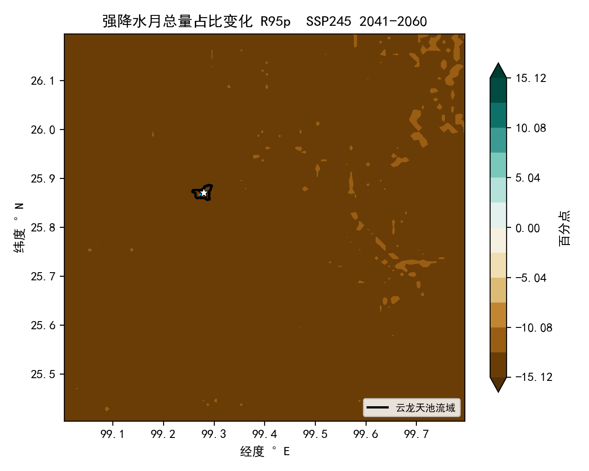
强降水占比变化 R95p（百分点）· SSP245 · 2041–2060
超过基准期同月 95 分位的月降水占年总量的比例变化。中期变化幅度小、正负格点混合，强降水结构尚未出现方向性调整；作为与末期图 72 对比的"结构基准"阅读。
降水 · SSP245 · 2081–2100（末期） · 全域 1km
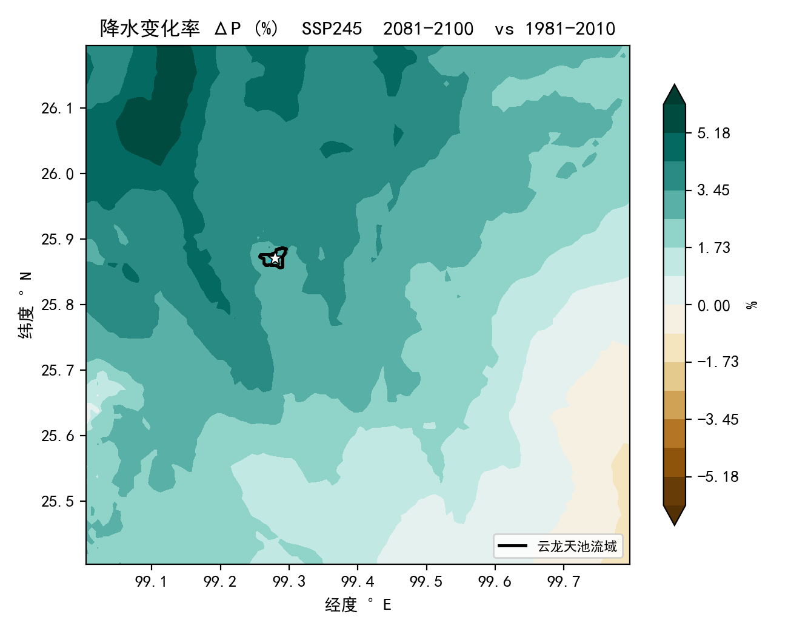
降水变化率 ΔP（%）· SSP245 · 2081–2100
末期区域平均 +2.6%，较中期（+1.5%）继续偏湿，且空间一致性提高。SSP245 下降水呈"温和增加"的整体判断，与西南季风区在增暖背景下的水汽增加预期一致。
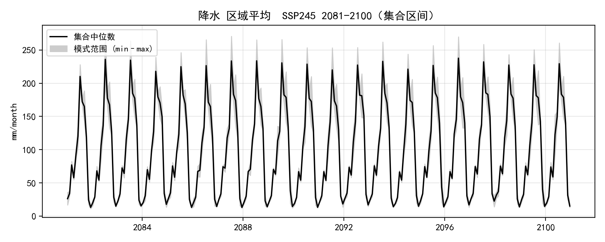
降水区域平均 · SSP245 · 2081–2100（集合区间）
雨季量级与形态保持，序列整体略高于基准期水平。模式间范围在雨季个别年份展开较大，说明极端湿润年的模式分歧高于普通年份——引用"最湿年"结论时需谨慎。
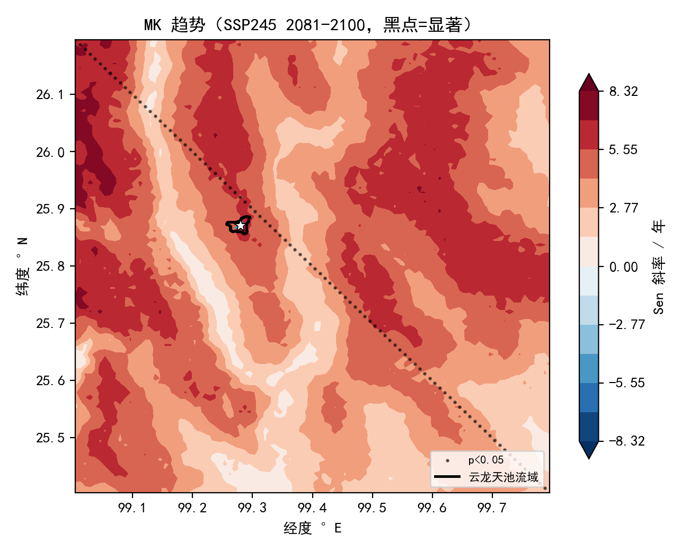
MK 趋势检验（Sen 斜率）· SSP245 · 2081–2100
86.9% 格点显著，较中期 15.8% 大幅提高——信号随窗口累积越过噪声门槛。与气温相反，降水趋势由"不显著"转为"多数显著"需要更长的时间积累，这一对比本身可作为方法稳健性的佐证。
强降水占比变化 R95p（百分点）· SSP245 · 2081–2100
总量温和增加的背景下，强降水占比变化的空间分异性大。结合图 61 阅读可区分"总量增加型"与"结构重组型"两类格点——后者对水土保持与面源污染的意义更大。
降水 · SSP585 · 2041–2060（中期） · 全域 1km
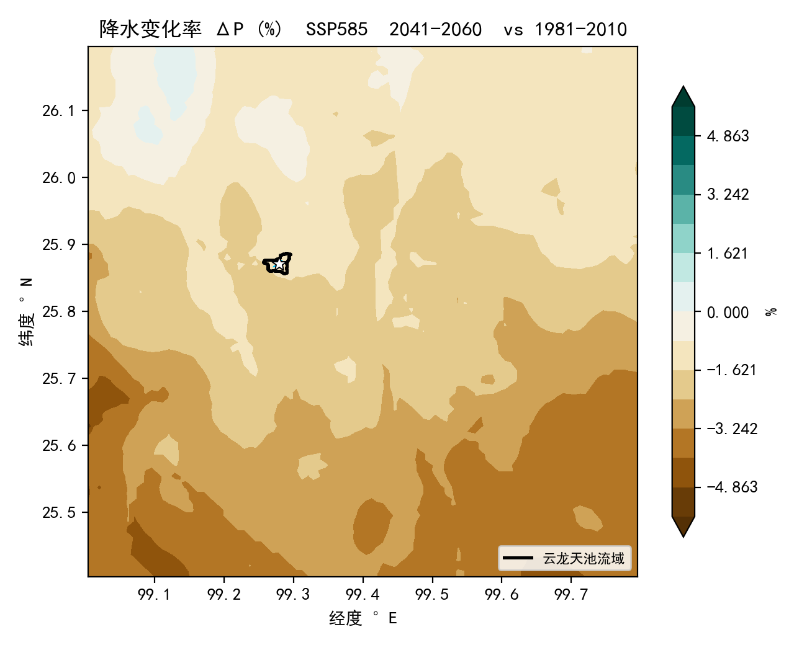
降水变化率 ΔP（%）· SSP585 · 2041–2060
高排放路径中期区域平均 −2.1%，轻度变干——与同期 SSP245（+1.5%）方向相反。两情景在中期已出现降水分岔，比气温分岔（图 47 vs 图 37）出现更早，可作为"情景敏感性"的展示素材。
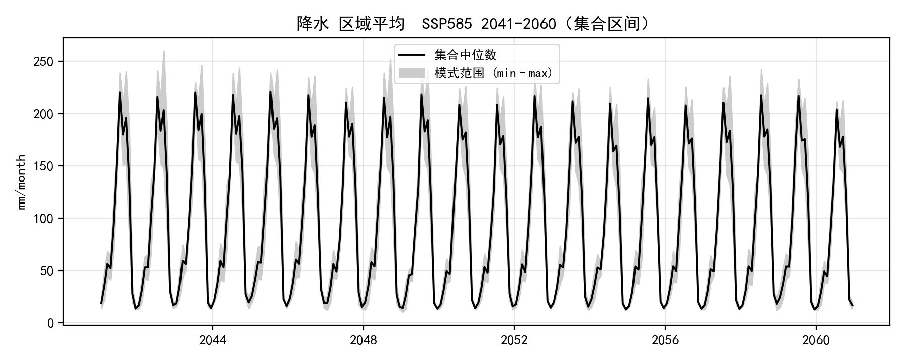
降水区域平均 · SSP585 · 2041–2060（集合区间）
雨季量级略低于基准期，干湿季形态不变。注意阴影带覆盖范围：降水模式间离散的绝对量（数十 mm/月）远大于变化信号本身（约 2 mm/月），这是降水预测不确定性表达的必要性所在。
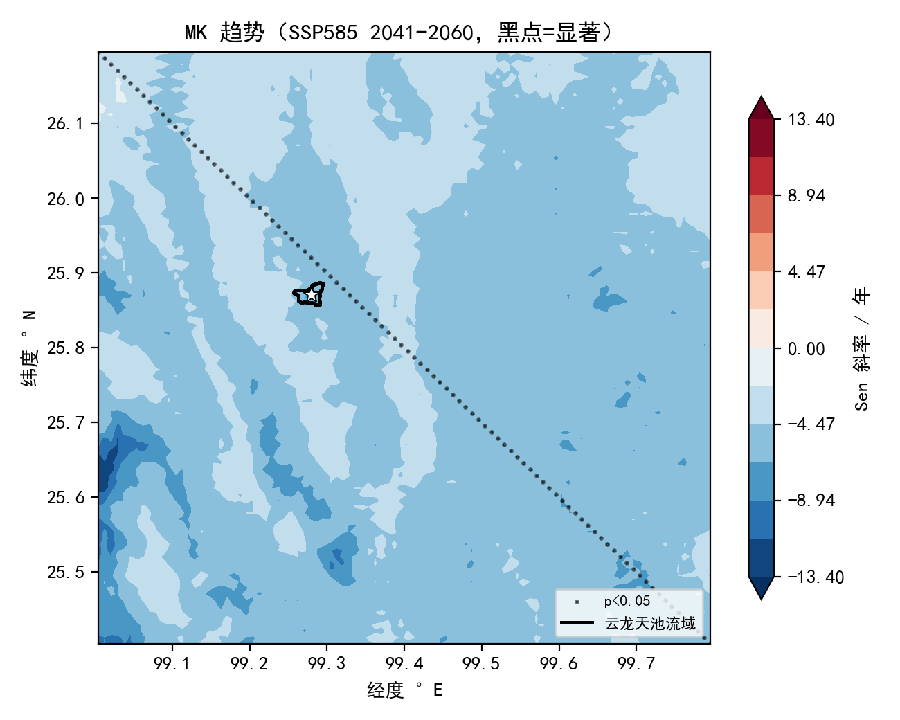
MK 趋势检验（Sen 斜率）· SSP585 · 2041–2060
92.2% 格点显著（斜率为负）。高排放下的变干信号在中期窗口即可被统计检验捕捉，方向一致的格点占绝对多数——中期"轻度变干"虽幅度小，但空间上具有一致性。
强降水占比变化 R95p（百分点）· SSP585 · 2041–2060
变干窗口中强降水占比以降低为主，即降水的减少部分地由强降水月份承担。该窗口是末期（图 72）结构转变的前奏：先强降水收缩，后总量被偏湿模式拉回（图 69）。
降水 · SSP585 · 2081–2100（末期） · 全域 1km
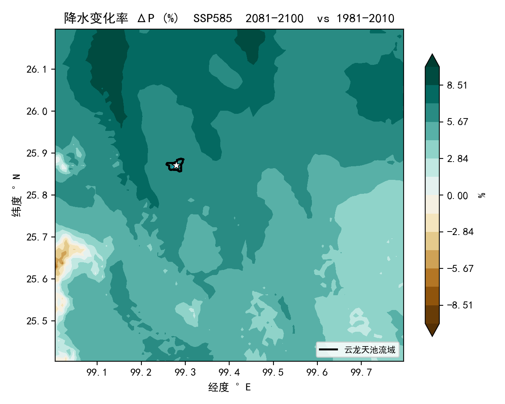
降水变化率 ΔP（%）· SSP585 · 2081–2100
末期集合中位 +5.7%——注意这个数字的来历：MPI 单模式为 −6.1%，偏湿的 MRI 将集合拉正。两模式给出相反符号，是多模式必要性的最直接证据；本图册对降水的末期结论应表述为"方向存在模式分歧，中位偏增 5.7%"。
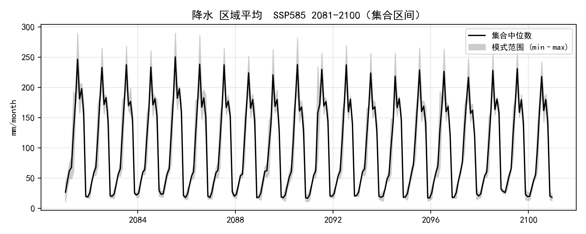
降水区域平均 · SSP585 · 2081–2100（集合区间）
末期集合区间明显比其它窗口宽——两模式末期降水分歧加大，阴影带上界（MRI）与下界（MPI）的差值在雨季可达数十 mm/月。这提示 Ssp585 末期降水的情景不确定性已超过信号本身，任何决策引用必须附带区间。
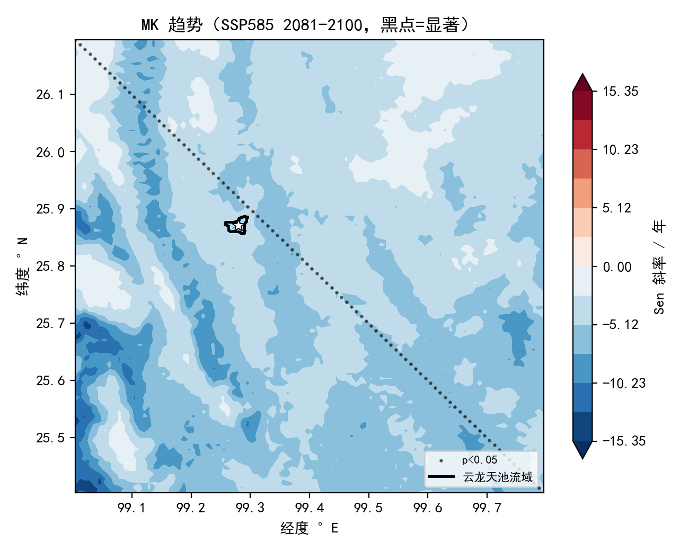
MK 趋势检验（Sen 斜率）· SSP585 · 2081–2100
75.9% 格点显著。与气温（100%）的差距来自两模式信号方向相反区域的相互抵消——显著性高的格点集中于两模式一致的湿润区，分歧区则趋势不成立，空间图与集合区间图（图 70）互为印证。
强降水占比变化 R95p（百分点）· SSP585 · 2081–2100
图册最需细读的图：总量中位 +5.7%，但强降水占比以 −10 ~ −15 个百分点为主。即降水结构向"总量微增、强降水月份集中度下降、分配更分散"偏移——对天池流域意味着汛期洪峰压力趋缓而枯季供水更稳的潜在可能，但也削弱了水库"以洪补枯"的调蓄空间。